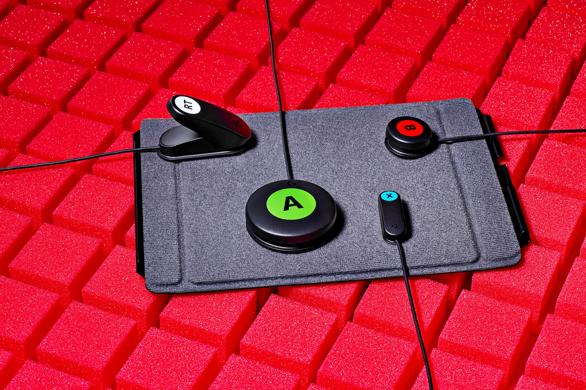

Logitech G lança kit de acessibilidade para controles de Xbox e PS5
30 de setembro de 2024
Jessica Pettway for TIME; Prop styling by Stephanie L. Yeh
A Logitech G lançou um Gaming Kit Adaptável projetado para funcionar com o Xbox Adaptive Controller e o PS5 Controle Access. Esse kit visa melhorar a experiência de jogos para pessoas com diferentes necessidades de acessibilidade, oferecendo personalização completa com novos botões e gatilhos duráveis. Fabricado com 31% de plástico reciclado pós-consumo, o produto foi desenvolvido em colaboração com diversas organizações de acessibilidade, permitindo flexibilidade e configurabilidade para atender aos jogadores com diversas habilidades físicas.
O Gaming Kit Adaptável permite que os jogadores personalizem os controles de acordo com suas preferências, com 12 botões e gatilhos plug-and-play. A Logitech G destaca que o kit é uma maneira de reafirmar o compromisso da marca em criar soluções inclusivas no universo dos jogos. O produto também foi projetado para garantir conforto e alta durabilidade, além de melhorar a acessibilidade para todos os tipos de usuários, proporcionando uma experiência de jogo mais inclusiva e personalizada.